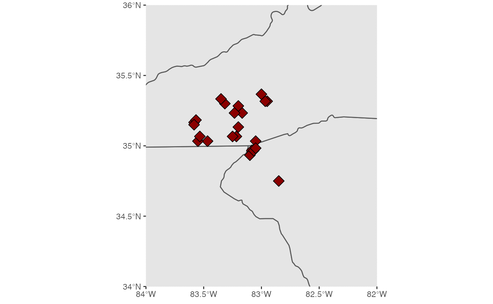

crookston.package.vignette.RmdHow to install the R package:
devtools::install_github("clairecrookston18/crookston.package1")How to lead the package:
library(crookston.package1)This function is important to use on data that is both categorical and numeric which list different morphological values by population and specimen ID. It allows the data of multiple columns (HdLgnth, HdWdth and HdDpth (mm)) to be used to calculate head volume and to take the mean so that the differences between populations (BA, BR, CN, CS, NH, and PD) can be analyzed and hypotheses made about their relationships and microevolution. This .csv file is modified from the original created by Christopher K. Beachy and Dean C. Adams which is used in the published article “Historical Explanationsf the Phenotypic Variation in the Plethodontid Salamander ‘Gyrinophilus porphyriticus’”.
The input for this function (x) is specific to the ORIGDATAcorrect.csv file which is read in as the ‘measurements’ dataframe or tibble. The output is a tibble with two columns: the first is the population and the second is the mean head volume for that population in millimeters squared.
## ── Attaching packages ─────────────────────────────────────── tidyverse 1.3.0 ──## ✓ ggplot2 3.3.2 ✓ purrr 0.3.4
## ✓ tibble 3.0.4 ✓ dplyr 1.0.2
## ✓ tidyr 1.1.2 ✓ stringr 1.4.0
## ✓ readr 1.4.0 ✓ forcats 0.5.0## ── Conflicts ────────────────────────────────────────── tidyverse_conflicts() ──
## x dplyr::filter() masks stats::filter()
## x dplyr::lag() masks stats::lag()
library(assertthat)##
## Attaching package: 'assertthat'## The following object is masked from 'package:tibble':
##
## has_name
measurements <- read_csv("../inst/extdata/ORIGDATAcorrect.csv")##
## ── Column specification ────────────────────────────────────────────────────────
## cols(
## specimen = col_double(),
## population = col_character(),
## SVL = col_double(),
## HdLngth = col_double(),
## HdWdth = col_double(),
## HdDpth = col_double(),
## EyeNost = col_double(),
## Gape = col_double(),
## TrunkLgth = col_double(),
## TrunkWdth = col_double(),
## `3rdtoehind` = col_double(),
## site = col_character(),
## elevation = col_character(),
## long.deg = col_double(),
## long.mins = col_double(),
## lat.deg = col_double(),
## lat.mins = col_double()
## )
mean_pop_head_vol(measurements)## Population MeanVol
## 1 BA 926.8943
## 2 BR 658.0064
## 3 CN 1043.8143
## 4 CS 681.2025
## 5 NH 993.0402
## 6 PD 735.1749This function allows for the manipulation of the ORIGDATAcorrect.csv so that the columns ‘population’, ‘long.deg’, ‘long.mins’, ‘lat.deg’, and lat.mins’ can be useable in the st_as_sf() function. Once the longitude and latitude parts of the coordinates are in the proper format and as sf objects, they can be used in the function geom_sf and coord_sf to plot the data to a map rendered by the package “rnaturalearth”. This allows for visualization of the sampling sites used to gather morphological data of various populations of the Spring salamander, ‘Gyrinophilus porphyriticus’ from North Carolina. This .csv file is modified from the original created by Christopher K. Beachy and Dean C. Adams which is used in the published article “Historical Explanationsf the Phenotypic Variation in the Plethodontid Salamander ‘Gyrinophilus porphyriticus’”.
The input for this function (x) is again the ‘measurements’ object made by using the read_csv() function for ORIGDATAcorrect.csv. This dataset is a tibble or data frame with the column names listed in the paragraph above. The output is a plot of the map called ‘map_plot1’ which is a ggplot.
library(tidyverse)
library(assertthat)
library(na.tools)
measurements <- read_csv("../inst/extdata/ORIGDATAcorrect.csv")##
## ── Column specification ────────────────────────────────────────────────────────
## cols(
## specimen = col_double(),
## population = col_character(),
## SVL = col_double(),
## HdLngth = col_double(),
## HdWdth = col_double(),
## HdDpth = col_double(),
## EyeNost = col_double(),
## Gape = col_double(),
## TrunkLgth = col_double(),
## TrunkWdth = col_double(),
## `3rdtoehind` = col_double(),
## site = col_character(),
## elevation = col_character(),
## long.deg = col_double(),
## long.mins = col_double(),
## lat.deg = col_double(),
## lat.mins = col_double()
## )
plot_map(measurements)## Linking to GEOS 3.8.1, GDAL 3.1.1, PROJ 6.3.1## GDAL version >= 3.1.0 | setting mapviewOptions(fgb = TRUE)## Loading required package: sp## rgeos version: 0.5-5, (SVN revision 640)
## GEOS runtime version: 3.8.1-CAPI-1.13.3
## Linking to sp version: 1.4-2
## Polygon checking: TRUE##
## Attaching package: 'maps'## The following object is masked from 'package:purrr':
##
## map
This function does not use the ORIGDATAcorrect.csv dataset, however, it is able to take data available from the package “rotl” to find taxa to plot to a phyogenetic tree. This is a very basic use of that package that shows the evolutionary relationships between the Plethodontid genera: Gyrinophilus, Eurycea, Desmognathus, Plethodon, Hemidactylium, and Bolitoglossa. This function can be used for any list of taxa, but here it is particularly those 6 genera listed above.
The input for this function (x) is a list of genera called ‘taxa’. The output is ‘plot_sala_tree’ which is a phylogram.
library(rotl)
library(assertthat)
taxa <- c("Gyrinophilus", "Eurycea", "Desmognathus", "Plethodon", "Hemidactylium", "Bolitoglossa")
build_phylo(taxa)##
Progress [----------------------------------] 0/12 ( 0) ?s
Progress [================================] 12/12 (100) 0s
## Warning in collapse_singles(tr, show_progress): Dropping singleton nodes with
## labels: mrcaott12483ott14848, mrcaott14848ott528502, mrcaott14848ott49615,
## mrcaott14848ott50761, mrcaott14848ott19809, mrcaott133627ott149923,
## mrcaott282212ott790878, mrcaott22089ott203311, mrcaott22089ott339774,
## mrcaott22089ott64142, mrcaott22089ott893552, mrcaott22089ott319473## $type
## [1] "phylogram"
##
## $use.edge.length
## [1] FALSE
##
## $node.pos
## [1] 1
##
## $node.depth
## [1] 1
##
## $show.tip.label
## [1] TRUE
##
## $show.node.label
## [1] FALSE
##
## $font
## [1] 3
##
## $cex
## [1] 1
##
## $adj
## [1] 0
##
## $srt
## [1] 0
##
## $no.margin
## [1] FALSE
##
## $label.offset
## [1] 0
##
## $x.lim
## [1] 0.00000 11.14084
##
## $y.lim
## [1] 1 6
##
## $direction
## [1] "rightwards"
##
## $tip.color
## [1] "black"
##
## $Ntip
## [1] 6
##
## $Nnode
## [1] 5
##
## $root.time
## NULL
##
## $align.tip.label
## [1] FALSE